1과목: 조경사
1. 다음 ( ) 속에 들어갈 조경가들을 순서대로 나열한 것은?
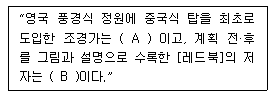
2. 16세기 이탈리아의 르네상스식 별장 정원 가운데 제 1 노단에 정방형의 못이 있고 분수가 있는 중앙의 둥근 섬을 중심으로 하여 십자형의 4개 의다리가 놓여 있는 곳은?
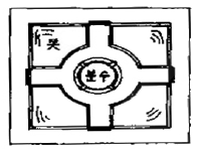
3. 이스파한은 페르시아의 사막지대에 위치한 오아시스 도시이다. 이스파한의 국토계획 요소가 아닌 것은?
4. 우리나라의 궁원이나 원포 즉, 현대 의미의 조경을 관장했던 관서가 있었는데 다음 중 고려에 설치되었던 관서는?
5. 고대 이집트의 조경과 관련된 내용 중 옳지 않은 것은?
6. 인도의 정원에 관한 설명 중 옳지 않은 것은?
7. 신라시대에 생겨난 사절유택(四節遊宅:東野宅, 谷良宅)에 대한 설명 중 옳은 것은?
8. 다음 중 직선과 곡선을 혼용한 원지(苑地)는?
9. 창덕궁 후원의 관람정과 유사한 형태의 정자(亭子)는?
10. 다음 일본조경과 관련된 내용 연결이 옳지 않은 것은?
11. 도산서원에 퇴계선생이 단을 만들어 매(梅), 죽(竹), 송(松), 국(菊)을 심고 그 단을 무엇이라 하였는가?
12. 앙드레 르 노르트가 창안한 프랑스 고유의 정원양식이라 할 수 있는 평면기하학식 정원이 아닌 것은?
13. 다음 중 일본의 고산수(枯山水)정원의 성립에 가장 크게 영향을 끼친 사상은?
14. 영국 풍경식 정원의 영향을 받은 독일의 대표적인 정원은?
15. 정원의 중심축선상에 Place - Water Parterre - Parterre de Latona - Tapisvert - 아폴로 분천 등이 설치되어 있는 곳은?
16. 중국의 낙양가람기에 전해지는 정원으로 대해와 같은 연못을 파서 뱃놀이를 즐기고, 연못 중앙의 봉래산에는 선인관을 지었다는 곳은?
17. 정원설계의 기능적, 강조적, 예술적 접근을 강조한 영국 조경가는?
18. 경복궁 동북쪽 후원에 위치한 정자와 원림이 아름다웠던 동산은?
19. 일반적으로 조선시대 민가정원(民家庭圓)에 대한 설명 중 옳지 않은 것은?
20. 세계적인 문화유산 ‘종묘’에 대한 설명 가운데 옳지 않은 것은?
2과목: 조경계획
21. 자연공원법상의 용도지구(用途地區)가 아닌 것은?
22. 도시화를 전체 인구 중 도시지역에 집중되는 인구의 비율 또는 이러한 비율의 증가로 정의한 사람은?
23. 도시공원 및 녹지 등에 관한 법률에서 도시공원을 그 기능 및 주제에 따라 구분할 때 생활권 공원에 속하는 것은?
24. 공간 제한 요소 중의 하나인 천정면(天井面)을 구성하기에 가장 적합한 것은?
25. 설문지에 의한 조사방법의 특징이 아닌 것은?
26. 맥하그(Ian Mcharg)가 사용한 도면결합방법(overlay method)을 가장 잘 설명한 것은?
27. 기본계획안 작성시 교통, 동선계획의 설명으로 올바르지 않은 것은?
28. 지구공원의 개설로 얻을 수 있는 효과가 아닌 것은?
29. 레크리에이션 계획에는 여러 접근방법이 있다. 이중 일반 대중이 여가 시간에 언제 어디서 무엇을 하는가를 상세히 파악하여 그들의 구체적인 행동패턴에 맞추어 계획하려는 방법은?
30. 우리나라의 공원, 유원지 등은 기후적 영향으로 보통 몇 계절형으로 분류되는가?
31. 옥상정원의 설계시 일반적으로 고려하지 않아도 될 대상공간(site)의 조건은?
32. 다음은 야생동물(wild life)의 서식처(분포)와 관련된 인자들이다. 야생동물의 서식처(분포)와 가장 밀접한 관련이 있는 것은?
33. 오리엔탈링크(oriental link)에 대한 설명 중 틀린것은?
34. 우리나라 자연공원 지정기준에 맞지 않은 것은?
35. 도시공원 및 녹지 등에 관한 법률에서 도시공원의 점용 허가를 받지 않아도 되는 것은?
36. 사회적 행태의 이론적 모델에 해당하지 않는 것은?
37. 공간수식 기법에 대한 설명 중 옳지 않은 것은?
38. 조경계획에서 조망(view)의 처리방법을 설명한 것 중 틀린 것은?
39. 계획 대상지의 수용력 산정에 있어서 최대시이용 자수(最大時利用者數)가 산출된 후에 시설별로 분산, 배분하여 각 시설 규모를 산출하려 한다. 다음 중 이과정에서 적용해야 할 사항으로 구성된 항목은?
40. 1,000평의 대지에 용적률 300%, 건폐율 25%의 건물을 세웠다. 이 건물의 전체 연면적의 50%까지를 상업용도로 전용 가능하다고 할 때, 상업용도로 사용할수 있는 최대 총 바닥 면적은?
3과목: 조경설계
41. 다음 그림에 대한 설명 중 가장 적합한 것은?
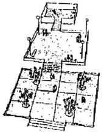
42. 노외주차장의 주차형식에 따른 다음 차로 너비 중 출입구가 2개일 때 내용으로 틀린 것은?
43. 모듈러(modular)와 가장 관련이 없는 것은?
44. 제도에 있어서 도형의 표기 방법 중 선의 형식과 두께에 관한 설명으로 옳지 않은 것은?
45. 제도에 있어서 도형의 표기 방법 중 선의 형식과 두께에 관한 설명으로 옳지 않은 것은?
46. A5제도용지의 크기는 A2 제도용지의 몇 배 인가?
47. 형태심리학에서 도형조직의 원리 중 연속성(continuation)의 원리를 나타내고 있는 그림은?
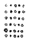
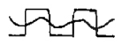
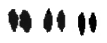
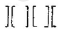
48. 루빈(E. Rubin)이 형태심리학에서 주장하는 도형(圖形, figure)과 배경(背景, ground)의 설명 중 가장 부적당한 것은?
49. Berlyne이 주장하는 인간의 미적 반응과정이 순서대로 올바르게 구성된 것은?
50. 아래의 그림에서 A의 부분을 가장 돋보이게 하려면 다음 색 중 어느 것이 적당한가?
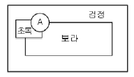
51. 도시공간에서 식별성과 다양성의 관계를 가장 올바르게 설명한 것은?
52. 설계과정 중 공간의 기본구상 수립단계에서 작성되는 개념도의 표현에서 고려하지 않아도 되는 내용은?
53. 먼셀 색표계의 내용에 관한 설명 중 잘못된 것은?
54. 치수선 및 치수 보조선에 관한 설명으로 옳은 것은?
55. 다음 중 공간을 구성하는 공통된 기본적인 기법이 아닌 것은?
56. 시각적 선호도(visual preference)의 일반적 측정 방법이 아닌 것은?
57. 한국의 스키장 입지기준에 관한 내용 중 적절하지 않은 것은?
58. 자전거도로의 설계시 도로의 폭의 기준은?
59. Litton이 분석한 산림경관의 유형 중 기본적 유형(fundamental types)에 포함되지 않는 것은?
60. 도로설계 요소 중 시거(Sight distance)에 대한 설명 중 틀린 것은?
4과목: 조경식재
61. 따뜻한 지방에 식재를 하면 그늘에서 견디는 힘이 약해져 곁가지가 마르기 때문에 좋은 정원수가 되기가 힘든 수종은?
62. 거친 돌 조각물을 더욱 돋보이게 하기 위한 배경 식재로 가장 적합한 설명은?
63. 수목의 음 ㆍ 양수 구별을 위한 외형상의 현저한 특징 중 틀린 것은?
64. 다음 식생유지관리와 관련된 설명 중 옳지 않은 것은?
65. 우리나라 중부지방의 건성천이에서 최종적으로 이루어지는 극성상 수종들로 옳은 것은?
66. 도로에 방음식재를 하는 경우 그림과 같이 음원(音原)과 수음점(受音点)의 거리를 ℓ로 한다면 수음점을 커버하기 위한 수림대의 최소 길이는 얼마로 잡는것이 바람직한가?
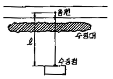
67. 다음 중 고속도로 식재시 주행기능의 증진을 목적으로 하는 기능식재방법으로 가장 적합한 것은?
68. 군락식재 설계를 위하여 식생조사를 하고자 한다. 다음 중 군락조사와 관계가 없는 것은?
69. 식재설계의 미적 요소 중 동질성을 창출하기 위한 여러 부분들의 조화있는 조합을 말하는 것은?
70. 식생에 미치는 환경요인 중에서 식생 분포를 결정 하는데 가장 영향을 미치는 요인은?
71. 잎이 피기 전에 꽃이 먼저 피는 수종은?
72. Tilla amurensis Rupr, Acer palmatum Thunb, Ulmus davidiana var. japonica Nak, Quercus acutissima Carr 등의 수종이 가장 왕성한 생장을 보이는 토양산도는?
73. 한 곳에서 잎이 3개씩 모여나고, 잎의 길이는 7~14Cm 정도되며 딱딱하고 비틀리는 것으로 사방조림용으로 많이 이용되는 수종으로 가장 적합한 것은?
74. 다음 ( )에 들어갈 적당한 것은?
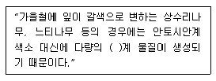
75. 브라운 블랑케의 식생조사법으로 식생조사를 할 때 교목림의 조사구역은 보통 어느 정도의 크기로 하는가?
76. 배식 기본 형태 중 자연식에 해당되는 것은?
77. 다음 중 낙우송과에 속하는 수목인 것은?
78. 일반적으로 가로수의 운반 및 식재방법에 관한 설명 중 틀린 것은?
79. 다음 수관의 고유수형 중 우산형(雨傘形)의 형태가 아닌 것은?
80. 옥상 및 인공지반 조경에 있어서 경량토의 용도 및 특성에 대한 설명으로 적합하지 않은 것은?
5과목: 조경시공구조학
81. 일반적으로 토량의 부피는 자연상태보다 흐트러진 상태의 것이 많아지게 된다. 다음 중 흐트러진 상태의 토량이 체적이 가장 많이 늘어나는 것은?
82. 200m의 측선을 20m 줄자로 측정하여 1회 측정에서 +5㎜의 누적오차와 ±25㎜의 우연오차가 있었다면 정확한 거리는?
83. 보(beam)의 종류 중 3개 이상의 지점을 가지면서 적당한 수의 돌쩌귀(hinge)를 배치하고 있는 정정보는?
84. 다음 방청도료(녹막이칠)의 종류에 해당되지 않는 것은?
85. 다음 암석의 분류 중 수성암계가 아닌 것은?
86. 시멘트 600포대를 12포대 높이로 쌓아 보관하기위한 가설물의 필요면적은?
87. 다음 중 네트워크 공정표의 종류에 관한 설명 중 옳지 않는 것은?
88. 공사수량 산출시 운반, 저장, 가공 및 시공과정에서 발생되는 손실량을 미리 예측하여 산정하는 것은?
89. 표준품셈에서 품에 포함된 것으로 규정된 평지에서 소운반 거리는 몇 m이내인가?
90. 아스팔트로 포장된 폭(幅)이 5m되는 차도에서 횡단구배를 2% 유지해야 한다면, 도로의 노정(路頂)과 노단(路端)의 수직적인 높이 차이는?
91. 다음 그림은 경사 도로의 등고선을 표시하고 있다. 이 도로의 단면은 어떻게 나타나는가?
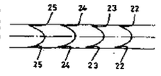
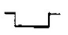
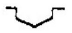
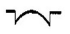
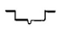
92. 옹벽에 뒷채움 흙을 채운 뒤에도 벽체의 변위가 생기지 않는 상태에서 작용하는 토압은?
93. PERT/CPM 공정계획에 의한 공기 산출결과 정상작업(정상공기)으로는 불가능하여 아간작업을 하여야 할 경우, 작업능률 저하를 고려한 품은 몇 ％ 까지 가산 할 수 있는가?
94. 강우의 유출에 대한 설명으로 옳지 않은 것은?
95. 다음 그림에서 도심축에 대한 단면 2차모멘트는 얼마인가?
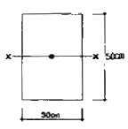
96. 시멘트의 품질시험에 관한 설명 중 틀린 것은?
97. 기존형 벽돌로 0.5B의 두께로 길이 5m, 높이 2m의 담을 쌓으려 할 때 필요한 벽돌량(정미량)은?
98. 다음 중 공사관리의 3대 요소에 해당하지 않는 것은?
99. 등고선 상에서 높이가 각각 98.2m 와 107.6m 인 두 지점 사이의 수평거리가 400m 라면, 높이차 1m의 수평거리는 얼마인가?
100. 다음 그림과 같이 보에 3ton의 하중이 가해질 때 RA 와 RB는 각각 얼마인가? (단, 소수점 3자리에서 반올림한다.)
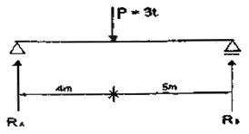
6과목: 조경관리론
101. 다음 중 진동과 충격에 강하므로 도로조명에 많이 사용되고, 연색성이 낮으나 수명이 가장 긴 조명등은?
102. 조경 해충 중 습기를 싫어하며 눈에 겨우 보일 정도의 미세한 것으로 꽁무니에서 거미줄 같은 것을 내어 잎과 어린줄기에 치며 잎은 백색으로 퇴화시키는 해충의 효과적인 방제는?
103. 다음 중 식물생육에 필요한 다량원소(多量元素)로 옳은 것은?
104. 목재의 건조 전 중량이 150g이고, 건조 후 중량이 125g인 목재의 함수율은?
1⑤. 다음 중 난지형 잔디의 특징이 아닌 것은?
106. 느티나무에서 자주 발생하는 병해로 잎에 작은 갈색의 반점이 생겨서 점점 퍼지면서 엽맥부근에 다각형의 병반이 형성되고, 병반의 종양부는 회백색이며 병증이 진행되면 입이 탈락하는 경우가 있는 것은?
107. 직영관리 방식의 장점이 아닌 것은?
108. 조경공간에서 관리하자에 의한 안전사고로 옳은 것은?
109. 조경관리 계획 수립시 작업별 1인당 소요인원을 산출할 경우 기초자료도 활용될 수 있는 내용만으로 구성된 것은?
110. 공원의 화장실에 대한 관리 내용 중 가장 거리가 먼 것은?
111. 공공의 조경 시설물의 유지관리 목표가 아닌 것은?
112. 콘크리트 포장의 파손 특징이 아닌 것은?
113. 다음 중 수목의 외관수술시 사용되는 공동(cavity) 충전재료 중 내호성, 내산화성, 기계적 강도, 내마모성, 접착력 등이 우수하고, 효과면에서 다른 재료들 보다 가장 좋은 것은?
114. 다음 공정표의 종류 중 작업의 관련성을 나타낼수는 없으나 공사의 기성고를 표시하는데 편리한 공정표로 각 부분공사의 상세를 나타내는 부분공정표에 적합하지만 보조적인 수단으로 사용되는 것은?
115. 다음과 같은 네트워크 공정관리에서 각 작업의 여유시간이 틀린 것은?
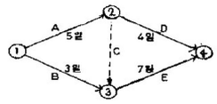
116. 다음 조경시설물의 정기점검과 보수의 목표에 관한 설명으로 맞는 것은?
117. 레크리에이션 수용능력을 물리적, 생태적 및 심리적 수용능력으로 구분한 체계를 확립한 사람은?
118. 다음 자연공원지역의 관리 중 이용자에 의한 손상관리의 관계를 기술한 것 중 옳지 않은 것은?
119. 장미 등의 화목류에 발행하는 흰가루병에 대한 설명으로 옳지 않은 것은?
120. 병든 식물의 표면에 병원체의 병원 기관이나 번식기관이 나타나 육안으로 식별되는 것을 가리키는 것은?